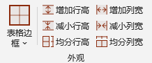
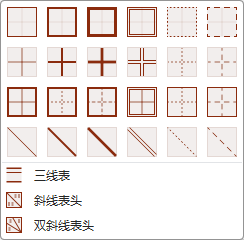

Excel助手Ribbon菜单中如下部分用于快捷设置表格的边框以及行列尺寸等：
此功能为Excel单元格边框线绘制的组合，针对选中的矩形区域，以外框、内框为单元设置边框线。
如左图所示，黑色线表示填充线框类型，灰色线并不填充线框，即不会改变当前设置的线型。第一行仅填充外框，第二行仅填充内框，第三行同时填充外框和内框，第四行填充斜线表头（仅指右下倾斜）。斜线表头填充仅针对选中区域的左上角单元格进行斜线填充，无论选中多个单元格还是一个单元格。
三线表功能，将所选区域设置为三线表线框类型，选中区域的第一行的顶、底以及区域底边线三处将设置为粗实线。该功能会清除区域内原外框、内框。
斜线表头功能与双斜线表头功能，可以快速创建一个具有内容的斜线表头，由于Excel对于单元格内的多行文本格式控制并未提供较大的灵活性，本程序斜线表头制作采用文字对象。 且Excel未提供双斜线的单元格线型，因此程序的双斜线也通过直线对象绘制。已绘制斜线表头的单元格，再次点击同类型斜线表头会识别现有斜线表头内容，并根据当前单元格尺寸调整表头外观。
斜线表头与双斜线表头在窗口处于拆分或冻结状态时不可用，在窗口存在缩放且缩放比例不为整数倍时，显示位置存在偏差，但使用功能正常。
增加行高、减小行高、增加列宽、减小列宽功能，可将选中的单元格、行或列的行高、列宽进行调整，每次增加的幅度根据程序设定，默认为1。对于行高而言为1磅，对于列宽而言为1个列宽单位。调整行高时、调整列宽时不必一定选择整行或整列，仅选择单元格，程序将对单元格所在行、列进行调整。
可将选中区域内的行以区域高度均分设置，将选中区域内的列以区域宽度均分设置。
使用上述功能需注意如下事项：
设置表格边框以及调整表格尺寸示例：